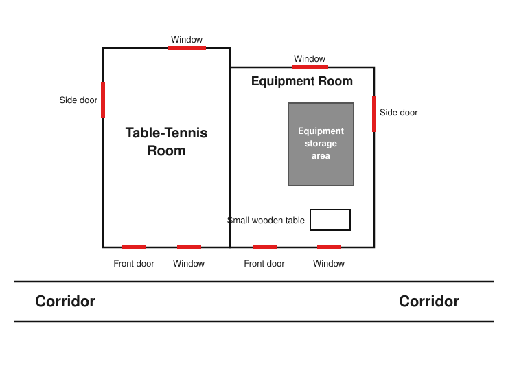
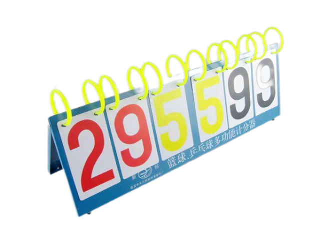
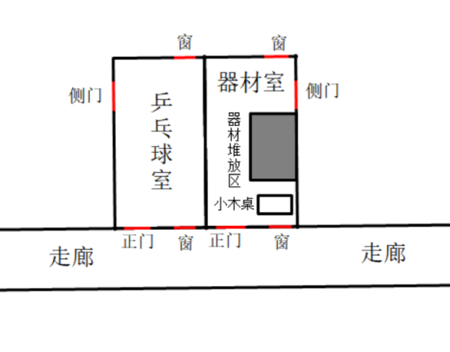

I
Founders' Day, a warm and pleasant afternoon.
I ambled toward the gymnasium, humming a tune and swinging the sleeves of my school-uniform jacket. Every so often some unfamiliar face in a gaudy, multicolored class shirt would dash past laughing loudly, leaving me looking rather like a single dot of white amid a riot of flowers. This is probably a scene you can only catch once a year — the school rules are strict, and once you leave the dormitory the outermost layer must be the uniform. At most you may pin on the school crest; all the other flashy badges are forbidden, and dyeing your hair is even more strictly banned. Only on Founders' Day is everyone granted the rare exception of wearing their class shirts on the outside.
"Their class's shirt looks pretty good, but ours isn't bad either." A-Yu, walking with me in his sky-blue class shirt, bounced along, now and then puffing out his chest as if deliberately showing off the fancy figure 12 emblazoned across the front. "I really wish we could dress like this all the time. Or at least make the uniform a bit more distinctive. All white is just too dull." He thought for a moment and then griped some more: "And that unchanging school badge — the design's so old-fashioned, too. Especially that number on it; it's way too big, an eyesore, like some bottle of Guojiao 1573 liquor."
"That's exactly how you can tell we're a hundred-year-old school."
Considering that A-Yu belongs to the reformist faction with no shortage of complaints about the school rules, grumbling like this was hardly surprising. He was always going on about how this uniform, apart from being excessively formal — from a distance the crest looks like something a university would have — is otherwise just clean and blank, too plain and stuffy, and easily stained besides. Far better, he said, to open things up and allow free styling; failing that, at least copy our brother school next door and come up with a halfway decent design. Now that he could finally wear the class shirt that everyone had discussed and designed together, his mood was perhaps, in a sense, the same as that of getting to play on your phone after going home following a month of consecutive overnight stays at the dorm.
I, for one, didn't feel much about it; perhaps I'm simply the sort of person with no real individuality. To me, clothes are just a covering for the sake of decency — presentable enough is fine, and agonizing over them any further is pointless. Hairstyles even more so. The school's unifying everyone's dress to save thinking time is a truly excellent thing. And looking at it from another angle, when graduation comes, doesn't it leave more space for friends to sign their names?
"See, that's exactly your typical otaku mindset. It's precisely that attitude of yours that means no girl will ever fancy you."
"Don't take that preachy tone with me, it's so old-fartish!"
After a string of harmless banter, our destination — the gymnasium — was finally in sight. As for why the two of us, on this bustling Founders' Day, had strayed from the main battlefield of the class stalls and exhibitions to discuss such empty, festival-clashing topics while running off to this out-of-the-way corner, well, that goes back to something the class committee said last week.
"Next week there's an activity called the 'Fun Relay Race,' two people per class. It's purely for fun, not much technical skill involved. Want to take part?"
Perhaps because the centennial Founders' Day was rather special, this year a whole batch of odd new activities had cropped up out of nowhere. Given that the other classmates were already wearing several hats and short-staffed, the two of us — idlers with nothing to do all day — were quite naturally dispatched to it. We were happy enough about it, too; after all, this activity really was just like play, with none of the dreariness of being banished to some distant land, more like skipping class to go to an amusement park.
When a person is in a good mood, their luck usually isn't bad either — that's always been my belief, and today proved no exception. In the few rounds just gone, the two of us had, remarkably, cut and slashed our way through every match in first place all the way to the final, and were about to come over to this table-tennis room to meet the last showdown against two classmates from Class 10 and Class 5. And the final event would be…
Once again I unfolded that crumpled little slip of paper.
II
"Drawing balls at random? It's not playing cards after all? This feels even less classy than the earlier ones."
Without realizing it, I had read the rules aloud under my breath.
- On the floor are two identical transparent boxes, one of them empty, the other holding three balls of different colors. Each ball represents a fixed point value, but only the referee knows it. In each round of drawing balls during the match — including any tiebreaker round that might occur — the order of drawing strictly follows the ranking from the semifinal.
- The match is divided into a first half and a second half; each class sends one classmate to compete in each half. In the first half, the referee will first announce the number of rounds to be drawn. Then, in each round, the Player A of each class steps forward in turn to draw one ball and place it into the empty box, while the referee records the score; after one person finishes drawing, the next person waits 10 seconds before drawing. Once all three have drawn, the round ends (at this point all three balls have been transferred into the empty box, and the box that originally held the balls now becomes the empty box instead). Ten seconds after the third person finishes drawing, the next round begins, the first player continues to draw, and so it goes back and forth for a number of rounds, after which the first half ends.
- The Players B of each class wait outside the venue, and may only enter the field to compete once the second half begins. The rules of the second half are exactly the same as those of the first half (including the drawing order and the number of rounds). After it ends, the referee tallies the total scores of the first and second halves to determine the final ranking. If a tie occurs, a tiebreaker is held; the tiebreaker consists of only one round, after which the final placings for champion, runner-up, and third place are decided.
Note: Before the second half begins, Player B may not enter the field to communicate with Player A. The total score may only be announced after the match ends; before then, the competing players also may not sneak a look at the scores.
"Sounds awfully complicated for what it is." A-Yu snatched the slip from my hand. "But when you boil it all down, it's just a probability problem — we don't know the point values of the various balls, so there's no way to know which ball is better to draw. Round and round it goes, but the probability of winning stays at one in three, independent of the drawing order. The few supplementary rules tacked on at the end are also there to ensure the result is completely random. After all, if you could see both the ball you drew and the balls others drew, and then see each of the corresponding scores, you could set up a system of equations and solve for the value of each ball. The two players not being allowed to communicate is the same logic — it's to minimize as much as possible the effect of any known information on the game, things like the number of rounds.
"In other words, this time it really is pure luck. The card game earlier had no technical content either, but at least it had some. Now it's truly down to fate." Babbling on, I muttered, "Speaking of which, for a game this simple at heart, why dress it up so fancily? The design's laid on awfully thick."
"Maybe it's to highlight how important the final is, without wanting to increase the game's complexity, so they deliberately made it all solemn and ceremonious. But if you ask me, this whole competition is plain stupid — though at our age we've done no shortage of stupid things ourselves."
As A-Yu talked on, he started sounding all grown-up again, so I hurriedly changed the subject.
"We ranked first in the earlier semifinal, so we go first, right?"
"Yeah, but like we just discussed, the first-mover advantage is useless in this game; it's still down to luck. The only upside is probably not being placed last, so you don't have to wait around for a good while and then symbolically pick from the balls others have left behind."
"Not necessarily. Drawing first won't change the probability of winning the championship, but it can guarantee that we don't lose too badly."
"It's barely even started, why are you already locking in a worst case? Can't you think about something positive, you guy?" A-Yu made as if to hit me.
"Oh come on, this is such an obscure competition that hardly anyone even comes to watch. It's not a bad thing to finally make the final and have a go. Listen, my suggestion is that in each round we draw a different color as much as possible. After all, if you keep drawing a single color, you might just keep getting the lowest score. Hmm, or how about this: you just draw in a fixed order — color A, color B, color C, then color A again… and so on. As long as, over n rounds, the number of times any one color is drawn is no greater than ⌈n/3⌉ (rounded up). Drawing this evenly should net us about a third of the points, so we won't be routed; we might even sneak into second, or even steal first."
"Same logic as your soccer betting over summer break, right? In your heart you were hoping Ronaldo would crush mighty France within ninety minutes and lift that damned Henri Delaunay Cup right away, yet you also put twenty yuan on France winning in regulation, while putting on a whole mysterious act for me about how you predicted it'd be a draw and go to extra time, guaranteed. Basically you cycle through all three possibilities once, so one of them is bound to hit, and either way you won't lose too badly."
"Correct. Soccer is betting, drawing balls is betting too…" I paused, then added, "And besides, doing it this way might also pile psychological pressure on the opponents. Think about it — what would the second person to draw think when they see it? With enough rounds they'd surely spot the pattern too, and might just choose the same safe strategy. That way we drag the opponents down to our level."
"What kind of crooked reasoning is that? You're thinking far too idealistically! Do you really take yourself for some battle-of-wits genius? You think you've got a protagonist's halo and everyone will just play along with you? In your dreams, peach."
Grumbling aside, A-Yu was won over by me and decided to adopt this intuitively can't-lose-too-badly plan of attack. Well, our luck earlier had been very good, but how much worse than us could opponents who'd made it this far really be? Betting purely on luck was still too dicey. Between a one-in-three chance at the championship and a high probability of not finishing last, the latter, as it turned out, was the more tempting after all.
At the time I had no way of knowing that it was precisely this decision that would turn the tables later on.
III
As Player A, A-Yu was soon called into the table-tennis room to compete. The moment he and the two from Class 5 and Class 10 went in, the door was shut tight and the curtains drawn fast, leaving not the slightest chance to peek.
With nothing to do, I leaned against the corridor wall and rested with my eyes closed, waiting for the whistle that would start the second half. I don't know how long passed before the side door of the adjacent equipment room suddenly creaked open. A girl wearing a referee's pass walked in waving a blank sheet of paper. She went straight past the equipment area — with its piles of various balls, plus a whiteboard, a scoreboard, and other auxiliary tools — came to a small wooden table by the window, carefully wiped the empty, dust-covered tabletop clean with a tissue, sat down with her back to the corridor, took out a pen she carried with her, and began scribbling something.

Was the first half over, and she recording the scores? The rules said no peeking, but I'm no upstanding type to begin with, so naturally I got up to something underhanded. I crept gingerly to the window and pressed up against it, peering inside, trying not to make too much noise, and shamelessly began to spy. But the paper was half blocked by the referee's slightly tilted upper body, and on top of that the writing was extremely small while my eyesight is only ordinary, so I had to adjust my posture several times in a row before I could barely make out that she was writing a few lines of crooked English.
What's this — turns out she was drafting an English composition. I was sorely disappointed, but still hoped she'd write something more. Just then, however, another girl, her hair tied up with both hands, gently pushed the side door open. My eyes instinctively darted away and down; I didn't dare meet her face, yet I had no intention of leaving. It wasn't until she had walked a fair way toward the wooden table that I came to my senses, hastily crouching down to pretend nonchalantly to tie my shoelaces, then bending over and shuffling in little steps to the other end of the corridor. How thoroughly embarrassing — but I shouldn't have been seen? Phew, close call.
After that whole fuss, I didn't dare press up against the window to spy anymore, yet I couldn't quell my curiosity, so I stood on tiptoe across the corridor and craned my neck to look. But because of the angle I couldn't see everything no matter what, and the voices, too, I could barely make out the gist of, not very clearly. It was at this point, though, that I noticed the girl was from our own class. Her name, however — oh no, I couldn't remember it. I thought again of A-Yu's gibe, "It's precisely that attitude of yours that means no girl will ever fancy you," and couldn't help lowering my head and sighing.
The newly arrived girl had brought nothing; she simply dragged over a stool and sat down directly facing the referee, lazily slumping onto it.
"Wow, do you really have to be this diligent? Even at a time like this you're squeezing in every spare second, not even properly listening to me. You're not telling me you write while you're keeping score too?"
"This is called making good use of fragmented time. I don't write while scoring, though — after all, I have to flip the scoreboard at every equal interval of time. Flipping the cards takes no brainpower, but if I really did write a bit, stop a bit, it'd easily disrupt the rhythm and break my train of thought. But you didn't come find me just to ask about this, did you?"
"Aiyaya, seen right through, am I. Then I'll just ask straight out: how many points does our class have right now? I'm just a little curious, that's all. I promise, promise I won't tip off the two from our class who are competing. A little gossip is no problem, right?"
"But you were just in there watching too, weren't you? Who knows your memory better than I do? You can still recall perfectly clearly who drew which ball in which round, can't you?"
"That's true, hehe, thanks for the compliment. But don't worry, how could I possibly cheat? Who knows my character better than you! Besides, you said this morning that your school crest had been lent out to borrow other equipment, but the balls and scoreboard used in this final were all borrowed using my school crest. Just consider it returning a favor…" The girl sat up straight and pleaded.
"All right, all right. Borrowing a few balls and you want a great big merit award? Looks like if I don't tell you, you'll keep making a fuss, so I'll tell you. There, it's this number." The referee lazily slumped onto the table, slowly extending one finger diagonally upward until it stopped in front of the girl's chest, and gave it the faintest of wiggles, twice. The girl across the table lowered her head, looked, and tentatively asked, "Ten…?"
The referee smiled and nodded. Only then did I realize that I had just been distracted and hadn't clearly heard the number the girl reported — I only caught the "ten" at the front, so I knew at least that it was "ten-something," but I couldn't be sure exactly what. Still, there was no way I'd seen it wrong: the referee had clearly extended just one index finger and wiggled it, with no other movement, and the girl opposite immediately guessed it was "ten-something" — so could it possibly mean eleven? Sigh, I'd eavesdropped just fine all the way up to here, so why did I have to drop the ball at this point? It's just like how in an English listening exam the most crucial part is always the bit you can't hear clearly, while you can pick up some information at the trivial spots. But I had no time to dwell on it — just as, even after missing something in a listening exam, you still have to grit your teeth and carry on.
"Eh, that little?"
"You're talking nonsense when you don't even know the point values of the balls. Actually it can't really be called especially little."
"Well I never. Eh, and by the way, how many points do the other two classes have? I tried hard to think but I still couldn't quite work it out…"
"What a coincidence — Class 5 has the same as you. Class 10, on the other hand, is way out in front, equal to the two of you added together."
So Class 10 had a full 22 points? No, no — I still couldn't be certain that gesture meant 11. But leaving aside exactly what "ten-something" it was, being this far behind was still, all in all, a total failure of the strategy. But that can't be right — how on earth did A-Yu manage it? Did he really listen to me? Following my plan, how could he possibly fall behind this badly? A-Yu isn't the type to change his mind at the last moment either. Was it because one of the balls had too disproportionately large a value…?
A half-formed idea suddenly took shape in my mind.
IV
The bell for the second half had already rung. The referee gathered her things and was about to leave, and I quickly walked into the table-tennis room, coming face to face with A-Yu, whose eyes were wandering.
"Did you act according to plan?" I mouthed the words at him, but he only nodded, then shook his head.
What's that supposed to mean — don't be a riddler! But then, the rules did say no communicating, so I had no choice but to guess. With no time left to keep up the encrypted exchange with A-Yu, and the referee urging me on, I had to go in cold. I took out a small red ball and placed it into the empty box, then, after drawing, tentatively observed the referee a few times. Behind the wooden table where the referee sat hung a clean whiteboard with a black marker and an eraser on it; on the wooden table sat the scoreboard (as shown below), but it was completely blocked by a low partition, her hand movements entirely hidden, so there was no way to roughly infer the size of the values from how fast or slow she flipped the cards.

I circled around to the back of the line and continued to watch closely the ball-drawing movements of the other two and the referee's reactions. The classmate from Class 5 drew a green ball, and Class 10 a white ball. Throughout, the referee kept her head raised high, watching us expressionlessly, and only when someone had drawn a ball would she quickly lower her head to glance, then raise it again. The card-flipping must all have been done blind, precisely so as to expose as little information as possible… eh, expose, information? A-Yu just now nodded and then shook his head…
I finally remembered: A-Yu seems to have red-green color blindness, which is why, when he saw classmates from other classes passing by in their gaudy, multicolored class shirts, he'd think they were all from one class. Back then he didn't seem to have recognized them.
If that's the case, then it's very possible he also can't tell apart the red ball and the green ball in the box. And the meaning of his nodding and then shaking his head was perhaps this — he tried his best to do as I said, but as to whether he had achieved the intended goal, he himself had no way to judge. After all, he drew in what he believed was the order red, white, green, but what he actually drew might have been red-white-red or green-white-green. If that's really the case… In an instant, those tiny, fragmentary clues arranged and combined themselves just so, constructing a road to certain victory. I held my breath and rapidly ran the calculations in my head. There shouldn't be any mistake.
When it was my turn to draw again, I no longer hesitated; after a deep breath I strode forward with my head held high and took out the very ball I wanted. After a number of rounds, the second half ended, and just as I had expected, I completed the comeback, narrowly overtaking Class 10 by the slimmest of margins.
一
創立記念日、ぽかぽかと暖かい午後。
僕は鼻歌を歌いながら制服のジャケットの袖を振り、のんびりと体育館へ向かっていた。色とりどりのクラスTシャツを着た見知らぬ顔が、時おり大声で笑いながら脇を駆け抜けていく。さしずめ僕は、咲き乱れる花の中にぽつんと浮かぶ一点の白といったところだ。これはおそらく一年に一度しか拝めない光景だろう——校則は厳しく、寮を出たら一番外側には制服しか着てはいけない。せいぜい校章を付けるくらいで、その他の派手なバッジはどれも禁止、まして髪を染めるなど厳禁だ。この創立記念日だけは、そうした規則の例外として、クラスTシャツを一番外に着ることが特別に許されるのだ。
「あいつらのクラスのTシャツ、なかなかいいな。でもうちのも悪くないぞ」。一緒に歩く阿宇（アーユー）は空色のクラスTシャツを着てぴょんぴょんと跳ね、時おり胸を張って、胸元の飾り文字の数字12をわざと見せつけるようにしていた。「普段からこういう格好ができたらなあ。じゃなきゃ制服をもっと特色のあるものにするとか。真っ白一色なんて単調すぎるよ」。彼は少し考えて、また文句を言った。「それにあの代わり映えしない校章、デザインも野暮ったいよな。特にあの上の数字、でかすぎて目障りだ。まるで国窖1573（中国の白酒）の瓶みたいじゃないか」
「だからこそ、うちが百年の歴史ある学校だってわかるんだろ」
阿宇が校則にいろいろ不満を持つ改革派であることを考えれば、こんな愚痴をこぼすのも別に不思議ではない。彼は普段から、この制服ときたら、堅苦しすぎる上に、遠くから見ると大学にでもありそうな校章を除けば、あとは真っ白ですっきりしているだけで、地味で堅苦しすぎるし、おまけに汚れやすい、いっそもっと開放的にして自由なコーディネートを許してくれればいいのに、それが無理でも隣の兄弟校みたいにせめてまともなデザインにしてくれ、とこぼしていた。今こうしてみんなで話し合ってデザインしたクラスTシャツをようやく着られるのだから、彼の気分は、ある意味では、一か月連続で寮に泊まり込んだあと家に帰ってスマホで遊べるようになったときの気持ちと、同じようなものなのかもしれない。
僕はといえば、それについて特に何の感慨もなかった。たぶん僕はもともと、これといった個性のない人間なのだろう。服なんて体裁を保つための覆いにすぎず、見られて恥ずかしくなければそれでいい、それ以上あれこれ悩んでも無駄だと思っている。髪型ならなおさらだ。学校が服装を統一して考える時間を省いてくれるのは、実にありがたいことだ。それに見方を変えれば、卒業のときに、友達が名前を書き込めるスペースがより多く空くというものではないか。
「だからお前はまさに典型的なオタク思考なんだよ。そのざまだから女の子に好かれないんだ」
「そんな説教くさい口ぶりはやめろよ、年寄りくさいぞ！」
当たり障りのない掛け合いを一通り交わすうち、目的地の体育館がついに目の前に近づいてきた。にぎやかな創立記念日に、僕ら二人がなぜ各クラスの出店や展示という主戦場を離れ、こんな何の足しにもならない、祝祭の雰囲気にそぐわない話題を語り合いながら、こんな辺鄙な片隅にやって来たのか——それは先週のクラス委員の一言にさかのぼる。
「来週、『お楽しみリレー』っていう催しがあるんだ。各クラス二人ずつ、純粋に遊びで、たいして技術もいらないやつ。出てみない？」
百年の創立記念日が特別だったせいか、今年はわけもなく妙な催しがいくつも増えていた。他のクラスメートはすでにいくつも役を兼ねていて人手不足だったので、一日中ぶらぶらしている僕ら二人の暇人が、当然のごとくこれに割り当てられたのだ。僕らも喜んでいた。なにせこの催しは本当に遊びのようなもので、辺境へ左遷されるような侘しさもなく、むしろ授業をサボって遊園地に行くようなものだったから。
人は気分がいいときには、たいてい運も悪くない——僕はずっとそう思っているし、今日も例外ではなかった。さきほどの数回戦で、僕ら二人はなんと一位の成績で勝ち進み、関門を次々と突破して決勝までたどり着いた。これからこちらの卓球室へ来て、10組と5組の二人との最後の対決を迎えるところだ。そして最後の種目は……
僕はあのくしゃくしゃの小さな紙きれをもう一度広げた。
二
「ランダムに玉を引く？まさかのトランプじゃないのか？前のよりも格が低い感じだな」
僕は知らず知らずのうちに、小声でルールを読み上げていた。
- 場には同じ形の透明な箱が二つあり、一方は空で、もう一方には色の異なる三つの玉が入っている。それぞれの玉は固定の点数を表すが、それを知っているのは審判だけである。試合中の玉を引く各ラウンドは、起こりうるタイブレークのラウンドも含め、すべて準決勝の順位に厳密に従った順番で玉を引く。
- 試合は前半と後半に分かれ、前半・後半それぞれに各クラスが一名ずつ選手を出して戦う。前半では、審判がまず引くラウンド数を告げる。続いて各ラウンドにおいて、各クラスの選手Aが順番に前へ出て玉を一つ引き、空の箱に入れ、同時に審判が点数を記録する。前の人が引き終えてから、次の人は10秒待ってから玉を引く。三人全員が引き終えると一ラウンドが終わる（この時点で三つの玉はすべて空だった箱へ移され、もともと玉が入っていた箱が逆に空の箱となる）。三人目が引き終えて10秒後に次のラウンドに入り、一番目の選手が引き続き引く。こうして何ラウンドか繰り返したのち、前半が終わる。
- 各クラスの選手Bは場外で待機し、後半が始まってからでなければ場内に入って戦うことはできない。後半のルールは前半とまったく同じ（引く順番、ラウンド数を含む）であり、終了後、審判が前半・後半の合計点を集計して最終順位を決める。同点が生じた場合はタイブレークを行い、タイブレークは一ラウンドのみで、その一ラウンドののちに最終的な優勝・準優勝・三位の順位を決定する。
注意：選手Bは後半が始まる前に場内に入って選手Aと連絡を取ってはならない。合計点は試合終了後でなければ発表できず、それまでは出場選手も点数をこっそり覗いてはならない。
「説明はずいぶん複雑だな」。阿宇は僕の手から紙きれをひったくった。「でも突き詰めれば要するに確率の問題だろ——各々の玉の点数の大きさがわからないんだから、どの玉を引けば有利かなんて知りようがない。ぐるぐる回ったところで、勝つ確率は三分の一で変わらず、引く順番とは無関係さ。後ろに補足されたいくつかのルールも、結果を完全にランダムにするためのものだろ。だって自分や他人が引いた玉を見て、さらにそれぞれの点数まで見られたら、連立方程式を立てて各々の玉の点数を割り出せちまうもんな。二人の選手が連絡を取れないのも同じ理屈で、ラウンド数とか、既知の情報がゲームに与える影響をできるだけ減らすためさ」
「つまり今度こそ本当に運任せってわけか。前のトランプも技術なんてなかったが、それでもまだいくらかはあった。今度は本当に運を天に任せるしかないな」。僕はくだらないことを言いながらつぶやいた。「そういえば、本質はこんなに単純なゲームなのに、どうしてわざわざこんなに派手にするんだ？凝りすぎだろう」
「たぶん決勝の重要性を強調するためじゃないか。それでいてゲームの複雑さは増やしたくないから、わざと厳かにもったいぶった感じにしたんだろ。まあ僕に言わせれば、この試合まるごと馬鹿げてるけどな。もっとも、この歳の僕らだって馬鹿なことは散々やってきたわけだが」
阿宇は話しているうちにまた大人びたことを言い出したので、僕は慌てて話をそらした。
「僕ら、さっきの準決勝で一位だったから、最初に出るんだよな？」
「ああ。でもさっき話し合った通り、このゲームじゃ先手の利点なんてないさ、結局は運頼みだ。唯一いいことといえば、たぶん最後の順番にされなくてすむってことかな。しばらく待たされた挙句に、他人が選び残した玉から形だけ選ばされる、なんてことにならずに済む」
「そうとも限らないさ。最初に玉を引いても優勝の確率は変えられないけど、あまりみっともない負け方をしないことは保証できる」
「まだ始まってもいないのに、もう下限を確保しようっていうのか。お前って奴は、ちょっとは前向きなことを考えられないのか？」。阿宇は殴る素振りをした。
「まあまあ、どうせこれは見に来る人もいないようなマイナーな試合だろ。せっかく決勝まで来たんだから、一勝負してみるのも悪くないさ。いいか、僕の提案はこうだ。毎ラウンドできるだけ違う色を引くんだ。だって同じ色ばかり引いてたら、ずっと最低点を引かされるかもしれないだろ。うん、いっそこうしよう。お前はA色の玉、B色の玉、C色の玉、またA色……という具合に、決まった順番で引いていけばいい。要するにnラウンド引くなら、どの色も引かれる回数が⌈n/3⌉（切り上げ）以下になるようにすればいいんだ。こうやって満遍なく引けば、だいたい三分の一の点数は取れるはずで、惨敗することはないし、うまくいけば二位に紛れ込めるかも、いや一位を盗めるかもしれない」
「お前のこの夏のサッカー賭博と同じ理屈だろ？心の中ではC・ロナウドが90分以内に強敵フランスを倒して、すぐにあの忌々しいアンリ・ドロネー杯を掲げるのを願ってたくせに、二十元でフランスの90分以内優勝に逆張りもして、僕に対しては、引き分けて延長戦になると予想した、絶対だ、なんてもったいぶってみせてたよな。要は三通りの可能性を全部一巡させるから、どれか一つは必ず当たって、どっちみち大損はしないってわけだ」
「正解。サッカーも賭けなら、玉引きも賭けってわけさ……」。僕は一拍おいて、こう続けた。「それにこうすれば、相手に心理的なプレッシャーをかけられるかもしれない。考えてみろ、二番目に玉を引く奴がそれを見たらどう思う？ラウンドが増えれば、奴だって絶対に察しがつくはずだ。ひょっとしたら、この無難な戦略を選ぶかもしれない。そうすれば相手を僕らと同じレベルまで引きずり下ろせるってわけさ」
「何だその屁理屈は、考えが理想的すぎるんだよ！自分を何かの知略バトルものの天才だとでも思ってるのか？主人公補正でもついてて、みんながお前の思い通りに動くとでも？夢でも見てろ、ピーチ（peach）が」
文句は言いつつも、阿宇は僕に説得され、この直感的に大損はしないという作戦方針を採ることにした。まあ、さっきまでは運がとてもよかったとはいえ、ここまで勝ち上がってきた相手が、僕らよりそんなに弱いわけがあるだろうか。純粋に運頼みではやはり危なすぎる。三分の一の確率で優勝することと、高い確率で最下位にならないこと——結局のところ、後者のほうが魅力的だったというわけだ。
あのとき僕は知る由もなかった。まさにこの決断こそが、のちに形勢を逆転させることになるとは。
三
選手Aである阿宇は、まもなく卓球室へ呼ばれて試合に臨んだ。彼と5組・10組の二人が中に入るやいなや、扉はぴたりと閉ざされ、カーテンもきっちり引かれて、覗き見の隙など少しも与えてくれなかった。
することもないので、僕は廊下の壁にもたれ、目を閉じて、後半開始の笛の音を待った。どれくらい経ったかわからないが、隣の用具室の脇のドアが突然、きいっと音を立てて開いた。審判の証を付けた女子が、一枚の白紙を振りながら入ってきた。彼女は各種のボール類、それに白板や得点板などの補助道具が積まれた用具コーナーをまっすぐ通り過ぎ、窓辺へやって来ると、ティッシュで、何も置かれていない埃まみれの小さな木のテーブルを丁寧に拭き、廊下に背を向けて腰を下ろし、携帯していたペンを取り出して、さらさらと何かを書き始めた。
前半が終わって点数を記録しているのだろうか？ルールには覗いてはいけないとあったが、僕はもともとまっとうな人間でもないので、ごく自然によからぬ心が動いた。僕はそろそろと窓辺へ寄り、できるだけ大きな音を立てないようにして、へばりついて中を覗き込み、こうしてあつかましくも盗み見を始めた。だが紙は、審判のやや傾いた上半身に半分隠れている上に、字が極端に小さく、僕の視力もごく平凡なものだから、続けて何度も姿勢を変えて、ようやく彼女が書いているのが、何行かのへなへなした英語であることがかろうじて見て取れた。
なんだ、英作文の下書きをしていたのか。僕はひどくがっかりしたが、それでも彼女がもっと何か書いてくれることを期待していた。だがちょうどそのとき、もう一人の女の子が、両手で髪を結いながら、そっと脇のドアを押し開けた。僕の視線は反射的に下へそらされ、彼女の顔を正面から見る勇気はなかったが、立ち去る気もなかった。彼女が木のテーブルのほうへかなり進んでくるまで気づかず、慌ててしゃがみ込み、何食わぬ顔で靴ひもを結ぶふりをして、腰をかがめて小刻みな歩みで廊下のもう一方の端へ移動した。実にみっともなかったが、見られてはいないはずだ？ふう、危ないところだった。
こんな一騒動を起こしたので、もう窓にへばりついて覗き見する勇気はなくなったが、それでも好奇心は抑えきれず、廊下を隔てて爪先立ちになり、首を伸ばして眺めた。だが角度の都合でどうしても全部は見えず、声のほうも、かろうじて大筋がわかる程度で、あまりはっきりとは聞こえなかった。だがこのとき僕は、その女の子が自分のクラスの子だと気づいた。名前は——しまった、思い出せない。僕はまた、阿宇が僕をからかったあの一言「そのざまだから女の子に好かれないんだ」を思い出し、思わず頭を垂れてため息をついた。
新しく来た女の子は何も持っておらず、ただ腰掛けを一つ引っ張ってきて審判の真向かいに座り、だらしなくそこへ突っ伏した。
「わあ、そこまで真面目にやる必要ある？こんなときまで一分一秒を惜しんで合間を縫って書いてるなんて、私の話もろくに聞いてないし。まさか採点しながらも書いてるんじゃないでしょうね？」
「これは隙間時間の有効活用っていうの。採点中は書かないわよ。だって一定の同じ間隔ごとに得点板をめくらなきゃいけないんだから。めくるだけなら頭は使わないけど、書いては止め書いては止めなんてやったら、リズムが乱れて思考が途切れやすいの。でも、あなたが私を訪ねてきたのは、これを聞くためだけじゃないでしょ？」
「あらら、見抜かれちゃった。じゃあ単刀直入に聞くけど、うちのクラスは今何点なの？ただちょっと気になっただけなの。約束する、約束するから、うちのクラスの出場してる二人には絶対に通報しないって。ちょっとした噂話くらい問題ないでしょ？」
「でもあなた、さっき中で見てたんじゃないの？あなたの記憶力、他の人は知らなくても私が知らないわけがないでしょ？誰がどのラウンドでどの玉を引いたか、今でもはっきり覚えてるんじゃない？」
「それはそうだけど、えへへ褒めてくれてありがと。でも安心して、私がイカサマなんてするわけないでしょ。私の人柄、他の人は知らなくてもあなたが知らないわけがないでしょ！それに、あなた今朝、校章を他の用具を借りるのに貸しちゃったって言ってたよね。この決勝で使う玉も得点板も、ぜんぶ私の校章で借りたものなんだから。恩返しだと思って……」。女の子は身を起こして懇願した。
「はいはい、玉をいくつか借りたくらいで大手柄かっていうの？どうやら私が言わなきゃずっと騒ぎ続けるみたいだから、言うわよ。ほら、この数よ」。審判はだらりとテーブルに突っ伏したまま、斜め上へゆっくりと指を一本伸ばし、女の子の胸の前で止めると、ごくわずかに二度、揺らした。テーブルの向かいの女の子は頭を下げて見ると、探るように「十……？」と尋ねた。
審判は微笑んでうなずいた。このときになってようやく僕は、さっき気を取られていて、女の子が言った数字をまるで聞き取れていなかったことに気づいた。前の「十」だけは聞こえたので、ひとまず「十いくつ」だということはわかったが、具体的にいくつかは確かめようがない。だが見たほうは絶対に見間違えるはずがない。審判は明らかに人差し指を一本だけ伸ばして揺らしただけで、余計な動作はなく、向かいの女の子はすぐに「十いくつ」だと当てた——ということは、まさか十一を指しているのか？ああ、せっかくここまでうまく盗み聞きしてきたのに、どうしてこんなところで失敗してしまったんだ。ちょうど英語のリスニングで、一番肝心なところはいつも聞き取れず、どうでもいいところでは多少の情報を拾えるのと同じだ。だが思い悩んでいる暇はなかった。英語のリスニングで聞き逃しても、歯を食いしばって続けるしかないのと同じように。
「えっ、そんなに少ないの？」
「玉の点数も知らないくせに、いい加減なことを言わないの。実のところ、特に少ないとも言えないわよ」
「まさか。あ、そういえば他の二つのクラスは何点なの？頑張って考えてみたけど、やっぱりよくわからなくて……」
「奇遇ね、5組はあなたたちと同じよ。10組のほうは大きく抜きん出ていて、あなたたち二つを足したのと同じ」
つまり、10組はまるまる22点もあるということか？いや、違う違う——あの手振りが11だとはまだ断定できない。だが、それが「十いくつ」であるかはひとまず措くとしても、これほど遅れをとっているのは、やはり総じて作戦の大失敗だ。でもおかしい——阿宇はいったいどうしたんだ？彼は本当に僕の言うことを聞いたのか？僕の計画通りにやっていれば、どう転んでもこんなに遅れをとるはずがないのに。阿宇は土壇場で考えを変えるようなタイプでもない。それとも、どれか一つの玉の点数の比重が大きすぎたせいなのか……？
頭の中に、突然まだ形をなさない考えが浮かんだ。
四
後半開始のベルがすでに鳴り、審判は荷物をまとめて立ち去ろうとしていた。僕も足早に卓球室の中へ入ると、ちょうど目を泳がせている阿宇と正面から鉢合わせた。
「計画通りに動いたか？」。僕は彼に口の形だけで伝えたが、彼はただうなずき、それから首を横に振った。
どういう意味だ、謎かけはやめてくれ！とはいえ、ルールでは連絡を取ってはいけないと言われていたから、推測するしかなかった。僕はもう阿宇と暗号での通信を続ける余裕もなく、審判に急かされて、やむなくぶっつけ本番でいくしかなかった。赤い小さな玉を一つ取り出して空の箱に入れ、引き終えてから、探るように何度か審判の様子をうかがった。審判の座る木のテーブルの後ろには、きれいな白板が掛かっていて、黒のマーカーと黒板消しが置いてある。木のテーブルの上には得点板が置かれていたが（下図の通り）、低い仕切り板でぴったりと隠され、手の動きは完全に遮られていて、めくる動作の速い遅いから点数の大きさをおおよそ推し量ることもできなかった。
僕は列の最後尾に回り込み、引き続き残りの二人が玉を取る動作と審判の反応を注意深く観察した。5組のクラスメートは緑の玉を一つ取り出し、10組は白い玉を一つ取り出した。審判は終始、頭を高く上げ、無表情で僕らを見つめていて、誰かが玉を引いたときだけ、素早く頭を下げてちらりと見て、また頭を上げた。札をめくるのはすべて手元を見ずにやっているのだろう、これもできるだけ少しも情報を漏らさないためだ……ん、漏らす、情報？さっき阿宇はうなずいて、それから首を振った……
僕はようやく思い出した。阿宇は確か赤緑色盲だったはずだ。だから色とりどりのクラスTシャツを着て通り過ぎる他のクラスの生徒を見たとき、同じクラスだと思ってしまったのだ。あのとき彼は、どうやら見分けがついていなかったらしい。
そうだとすれば、彼は箱の中の赤い玉と緑の玉も見分けがつかない可能性が大いにある。そして、うなずいてから首を振ったことの意味は、おそらくこういうことだ——彼は精一杯、僕の言う通りにやろうとしたが、予定の目標を達成できたかどうかは、彼自身にも判断のしようがなかった。なにせ彼は、自分では赤・白・緑のつもりの順番で引いたのに、実際に引いたのは赤白赤、あるいは緑白緑だったかもしれないのだから。もし本当にそうだとしたら……。一瞬にして、あの細かく断片的な手がかりが、まさにぴったりと組み合わさり、必勝への道を築き上げた。僕は息を止めて、頭の中で素早く計算を始めた。間違いはないはずだ。
再び僕が玉を引く番になったとき、僕はもう迷わなかった。深く息を吸い込んでから、頭を高く上げて前へ進み出て、自分の引きたかったその玉を取り出した。何ラウンドかののち、後半が終わり、僕は予想通り逆転を成し遂げ、ごくわずかな差で際どく10組を追い抜いたのだった。
一
校庆日，暖洋洋的午后。
我哼着歌甩着校服外套袖子一边慢悠悠挪向体育馆。不时有身穿花花绿绿班服的生面孔从一旁高声嬉笑着跑过，我倒像是万花丛中一点白了。这大概是一年仅一次能够得见的风景吧——校规抓的严，出宿舍后最外面只准穿校服，顶多挂个校章，其他花里胡哨的徽章都不准戴，染发什么更是严加禁止，也就校庆这天会在上述规则外破格允许大家把班服穿最外面了。
“他们班的班服挺好看诶，不过我们的也不赖。”与我同行的阿宇穿着天蓝色的班服蹦蹦跳跳，时而挺起胸膛像要刻意凸显胸前的花体数字12，“真希望平时也能这么穿啊，要么就把校服搞得更有特色些呢？一身白也太单调了。”他想了想又吐槽道：“还有那个一成不变的校徽，设计得也很老土啊，特别是上面那数字，太大了，碍眼，简直像什么国窖1573。”
“这样你才看得出我们是百年老校嘛。”
考虑到阿宇属于对校规颇有微词的革新派，发这种牢骚倒也不足为奇了。他平时就总嚷嚷着，这校服除正式过头、远远看去简直像是大学会有的校徽外，便是干干净净空白一片，太素太古板了点，还容易脏；倒不如开放些，能允许自由穿搭最好不过，再不济也学隔壁兄弟学校弄个像样点的款式。现在终于能穿上和大家一起讨论设计出的班服，跟连续留宿一个月后回家玩上手机，某种程度上讲或许是相同的心情吧。
我对此倒是没太多感觉，也许我本就是无甚个性的那种人，觉得衣服不过是块遮羞布，看得过眼就行，纠结再多亦是无用，发型什么更是如此，学校能统一穿着打扮省去思考时间实在是大好事一桩。而且换个角度看，等毕业时，不也能腾出更多空间让朋友们在上面签名吗？
“所以说你真是典型的宅男思维啊，就是这副德行才没女孩子看得上你。”
“不要一副说教口吻啦，太老气了！”
一串无关痛痒的对白过后，目的地体育馆终于近在眼前。要问我俩为啥会在热热闹闹的校庆日偏离各班摆摊展览的主战场，一边讨论这种没营养的和节日氛围格格不入的话题，一边跑到这犄角旮旯来，那还得从上星期班委的一句话说起。
“下周有个‘趣味接力赛’的活动，每班两人，纯是去玩的，也没多少技术含量，要参加吗？”
也许是百年校庆比较特殊的缘故，今年平白无故多出了好些奇奇怪怪的活动，考虑到其他同学早已身兼数职，人手不足，我们两个终日无所事事的大闲人就理所当然地被委派过来了。我俩也乐得快活，毕竟这活动真就跟玩一样，没有贬谪他乡的凄凉，倒像是逃课去游乐场了。
一个人心情好的时候，运气往往也不会差，我向来这么觉得，今天也没遇到例外。方才几轮比赛下来，我俩竟以第一名的成绩一路过关斩将杀到决赛，即将来这边的乒乓球室，跟10班、5班的两名同学迎接最后的对决。而最后的项目就是……
我再度展开了那张皱巴巴的小纸条。
二
“随机抽球？居然不是玩牌了吗？感觉逼格比前面还低呢。”
我不自觉地就小声念出了规则。
- 场上有两个相同的透明箱子，其中一个空置，另一个装有三颗颜色不同的球。每个球均代表一个固定分值，但只有裁判知道。比赛时每一轮抽球，包括有可能出现的加赛轮，都严格遵照复赛排名的次序先后抽球。
- 比赛分上下半场，上下半场每班各派一名同学参赛。上半场裁判会先告知抽球的轮数，随后每轮中，各班的选手A轮番上前抽出一个球放进空箱，同时裁判记录分数；前一个人抽完后，后一个人隔10秒再抽球。三人都抽完则一轮结束（此时三个球全部转移至空箱中，原来装球的箱反过来变成空箱）。第三人抽完10秒后进入下一轮，第一位选手继续抽，如是往复进行若干轮后上半场结束。
- 各班选手B在场外等候，待下半场开始方可进入场地比赛，下半场规则和上半场完全一致（包括抽球顺序、轮数），结束后裁判统计上下半场总分确定最终排名；若出现平分情况则进行加赛，加赛只进行一轮，一轮过后决定最终冠亚季军排名。
注意：选手B在下半场开始前不得进入场地与选手A交流。比赛结束后方可宣布总分，在此之前参赛选手也不可偷看分数。
“讲得倒是挺复杂。”阿宇从我手中抢过纸条，“不过归根结底就是个概率问题嘛——我们不清楚各个球的分值大小，无从得知抽哪个球更优，那绕来绕去，获胜的概率也就是三分之一不会变，与先后次序无关。后面补充的几条规则也是为了确保结果完全随机吧。毕竟如果看到自己和别人抽的球，再看到各自的分数，就可以列方程组算出各个球的分值了。两名选手不能交流也是一个道理，为的是尽可能减少已知信息对游戏的影响，像是轮数之类的。
“也就是说这次真纯拼运气了啊。前面玩牌虽然也没啥技术含量，但好歹还是有一些的。这下就真听天由命了。”我一边说废话一边嘟囔道，“话说本质这么简单的游戏，干嘛非弄得那么花里胡哨？设计感未免也太重了些。”
“也许是为了凸显决赛的重要性吧，又不想增加游戏的复杂度，就故意搞得郑重其事一点了。不过要我说，这整个比赛都很蠢就是，虽然咱这年纪也没少干蠢事吧。”
阿宇说着说着又变得大人气起来，我忙岔开话题。
“咱前面复赛排名是第一，所以是第一个上场没错吧？”
“是啊，可刚刚才讨论过，这个游戏先手优势没用啊，还不是得拼运气。唯一的优点大概是没排在最后一位，不用干等好一会再象征性地挑别人拣剩下的球吧。”
“这倒未必，最先抽球虽然改变不了夺冠概率，但能保证输得不会太难看。”
“这才哪到哪怎么就开始保下限了啊，你这家伙就不能想点好？”阿宇作势就要打我。
“哎呀反正这就是个冷门到都没什么人来看的比赛嘛，好不容易进决赛玩一把也没什么不好。听着，我的建议就是每轮都尽可能抽不同色，毕竟要是一直抽单一颜色，搞不好会一直拿到最低分。嗯或者要不干脆这样，你就按A色球、B色球、C色球，再A色球……这样的固定顺序抽下去。反正抽n轮的话，让任一颜色抽出次数都不大于⌈n/3⌉（取上整）就好。这样抽得比较均匀，大概能拿三分之一分数，不至于惨败，搞不好还能混个第二甚至偷个第一。”
“和你这暑假赌球一个道理对吧？心里呢盼着C罗在90分钟内就拿下强敌法国马上捧起这该死的德劳内杯，却又拿二十块反买法国常规时间夺冠，对我则装神弄鬼说你预测要打平进加时，包准。反正全部三种可能性轮着来一遍，总会中一个，怎么着都不会太吃亏。”
“正确的，足球也是赌球，抽球也是赌球……”我顿了顿又道，“而且这样一来兴许也能给对手施加心理压力。你想，第二个抽球的看到了会怎么想？轮数多了他肯定也能看出端倪，说不定也选择这种保险的策略呢？这样就把对手拉低到跟我们一个层次了。”
“这都什么歪理，你考虑得太理想了啦！真把自己当什么智斗番天才了？以为自带主角光环别人都会顺着你的意思走？想peach啊。”
吐槽归吐槽，阿宇也是被我说服，决定采取这种直观上不会太吃亏的作战方针了。嘛，虽然说前面运气是很好，但能走到这一步的对手又能比我们差到哪去呢？纯拼运气还是太悬。三分之一概率夺冠和大概率不会垫底，事实证明还是后者诱人一些。
那时我不会知道，正是这个决定在后面扭转了局势。
三
阿宇作为选手A很快被叫进乒乓球室比赛。和5班、10班的两人刚一进去，门就关严，窗帘也拉得死死的，还真不给一点偷看的机会。
闲来无事，我便靠在走廊上闭目养神，等待下半场开始的哨音。也不知过了多久，隔壁器材室的侧门突然吱呀一声打开了。一个戴裁判证的女生挥舞着一张空白纸走了进来。她径直绕过堆放着各种球类，以及白板、记分牌等辅助工具的器材区，来到窗前用面巾纸把一张空无一物灰尘密布的小木桌仔细擦干净，背对走廊坐定，掏出随身携带的笔就开始刷刷写下什么。

是上半场结束了在记录分数吗？规则里说了不能偷看，可我本就不是啥正经人，很自然地动了歪心思。我小心翼翼走到窗前趴着朝里张望，尽量不发出太大动静，就这么臭不要脸地开始偷窥，但纸被裁判略微倾斜的上身挡了一半，加上字写得极小，我的视力又很普通，所以连续调整了好几个姿势才勉强看到她写的是几行歪歪扭扭的英文。
什么嘛，原来是在给英语作文打草稿啊，我大失所望，但还是期待着会多写点什么。可就在这时，又有一个女孩双手扎着头发，轻轻将侧门顶开。我眼神下意识往下躲闪开来，没敢正对上她的脸，却没有要离开的意思，直到她朝着木桌这边又走了有一段路才反应过来，连忙快速蹲下装作若无其事地系鞋带，又弯着腰小碎步移动到走廊另一端。真是有够狼狈，不过应该没被看到？好险好险。
闹了这么一出，我也不敢再趴窗口偷窥了，却又按捺不住好奇心，隔着走廊踮起脚尖伸长了脖子张望。可因为视角原因怎么都看不完全，声音呢也勉强只能听个大概，并不很清晰。不过也是这时我才注意到，女孩是我们班上的。名字呢，坏了记不起来。我又想起阿宇揶揄我的那句“就是这副德行才没女孩子看得上你”，不由得低头叹了口气。
新来的女孩啥也没带，只是搬来一张凳子坐在裁判正对面，懒散地趴上去。
“哇，用不用这么认真啊？都这时候了还争分夺秒见缝插针呢，也不好好听我说话。你该不会计分的时候也在写吧？”
“这叫合理利用碎片化时间啦。计分的时候倒不会写，毕竟每隔一段相同时间就得翻记分牌，虽然只是翻翻牌不用动脑，但要真写一会停一会很容易影响节奏打断思路的。不过你来找我应该不只是问这个的吧？”
“哎呀呀被看透了呢，那我就直接问喽，我们班现在多少分啦？就是单纯有点好奇啦，我保证保证不会跟我们班参赛那两个通气的，八卦一下没问题吧？”
“可你刚刚也在里面看着吧？你的记忆力别人不了解我还不了解吗？谁谁谁哪一轮抽了哪个球现在都还记得清清楚楚吧？”
“这还真是，嘿嘿谢谢夸奖哟。不过放心啦我怎么会作弊呢，我的人品别人不了解你还不了解吗！再说了，你早上说你校章拿去借别的器材了，这决赛用的球还有记分牌可全是拿我校章借的呢，就当还个人情呗……”女孩直起身子央求道。
“好啦好啦，就借几个球都要记大功一件啊？看样子我要不说你还得一直闹下去，那我说就是。喏，是这个数。”裁判慵懒地趴倒在桌上，斜向上缓缓伸出一个手指停在女孩胸前，极轻微地晃动了两下。桌对面的女孩低下头一看，试探性问了声“十……吗？”
裁判微笑着点了点头。直到这时我才意识到，我刚刚分散了注意力，根本没听清女孩报的数字，只听到前面一个十，姑且知道说的是“十几”，但具体是几没法确定。不过看倒绝对不会看错，裁判分明只伸了一个食指并晃了晃，并没有多余动作，对面的女孩马上就猜是十几，那难不成指的是十一？唉，明明前面都偷听得好好的，怎么这时候就掉链子了呢？就好像英语听力里最关键的地方总是听不清楚，无关紧要处倒还能捕捉到一些信息一样。不过我也没时间纠结，就像英语听力听漏也还不是得咬咬牙继续做下去。
“诶，这么少啊？”
“你都不知道球的分值啥的就乱讲。其实也不能说是特别少啦。”
“居然。诶那话说其它两个班是多少分呢？虽然努力想了想但还是不太清楚……”
“挺巧，5班跟你们一样呢。10班则是遥遥领先，和你们两个加起来一样。”
也就是说，10班足有22分了？不对不对，还不能确定那个手势就是11，但就暂且不论那是十几，落后这么多也总归是作战策略大失败了。可不对啊，阿宇是怎么搞的？他真有听我的话吗？照着我的计划做怎么也不至于落后成这样啊？阿宇他也不像是那种会临阵改变主意的人。那是因为其中有某个球的分值比重过大吗……
脑子里突然有了个不成形的想法。
四
下半场铃声已经响起，裁判收拾东西就要离开，我也快步走入乒乓球室内，恰好迎面撞上眼神飘忽的阿宇。
“有按计划行动吗？”我朝他比了个口型，可他只是点点头，再摇摇头。
什么意思，别谜语人啊！不过也是，规则说过不准交流来着，那只好靠猜了。我已经顾不上再和阿宇加密通话，在裁判的催促下只得硬上，取出一颗红色小球放进空箱，取完又试探性地观察了几眼裁判。裁判所坐的木桌后挂着块干净的白板，上面有黑色马克笔和板擦；木桌上放着记分牌（如下图所示），可被一个低矮的隔板挡得严严实实的，手上动作完全被遮住，没法从翻牌动作快慢大致推测分值大小。
我绕到队伍最后，继续仔细观察剩下两人取球的动作及裁判的反应。5班的同学取出一颗绿球，10班则是一颗白球。裁判全程都高抬起头面无表情注视我们，直到有人抽出球，才快速地低头瞄一眼又抬起头来。翻牌应该都是盲翻的，为的就是尽可能不暴露一点信息……诶，暴露，信息？刚刚阿宇点头又摇头……
我总算想起来了，阿宇他好像有红绿色盲来着，所以看到身穿花花绿绿班服经过的别班同学时，会觉得是一个班的。那时他好像就没认出来。
既然如此，那他也很有可能分不清箱子里的红球跟绿球。而点头又摇头的意思或许就是——他尽力照我说的去做了，但是否达成了预定目标，他自己也无从判断，毕竟他按他以为是红、白、绿的顺序去抽，实际抽出的却可能是红白红或绿白绿。如果真是这样的话……一瞬间，那些细小而零碎的线索恰如其分地排列组合起来，构筑起一条必胜的道路。我屏住呼吸，在脑中快速演算起来。应该不会有错。
又轮到我抽球时，我再也没有犹豫，深吸一口气后昂首走上前去，取出了我想要的那颗球。若干轮后，下半场结束，我意料之中完成了逆袭，以极微弱的优势惊险反超了10班。